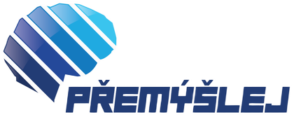
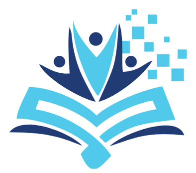
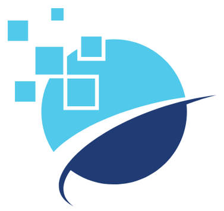
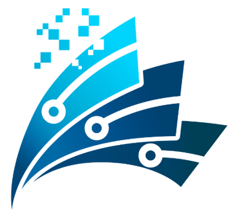
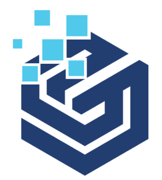

Lektoři přímo ve škole
Lektoři společnosti Calliditas realizují moduly bezplatně přímo na školách. Jsou určené pro 2. stupeň základních škol a pro střední školy a trvají 2 nebo 4 hodiny.

Digitální prostředí přináší obrovské příležitosti, ale zároveň celou škálu rizik.
Od roku 2019 ve školách.
Lekce o kyberbezpečnosti, kritickém myšlení, umělé inteligenci a digitální psychohygieně.
Kyberbezpečnost.
Základní kyberhrozby a způsoby, jak se jim bránit.
Kritické myšlení.
K čemu je dobré? Kdy ho používat?
Umělá inteligence.
Co to je, jak ji využít a jaké hrozby s sebou nese.
Digitální psychohygiena.
Rovnováha mezi reálným a digitálním světem.
Technologie jako nástroj. Ne jako náhrada myšlení.
O projektu
Od roku 2019 se projekt Přemýšlej věnuje nejpalčivějším problémům, které s sebou přináší digitální svět: kyberhrozbám, dezinformacím a fake news, dopadům technologií na tělesné a duševní zdraví i přínosům a výzvám umělé inteligence.
Lektoři společnosti Calliditas realizují moduly bezplatně přímo na školách. Jsou určené pro 2. stupeň základních škol a pro střední školy a trvají 2 nebo 4 hodiny.
Lektoři nejen předávají informace, ale především otevírají s žáky a studenty diskusi, podporují kritický a analytický pohled na technologie a vyzývají k formulaci vlastních názorů.
K lekcím patří prezentace a aplikace pro interaktivní tabule, metodické materiály a u vybraných modulů zážitkové aplikace pro virtuální a rozšířenou realitu.
Časová osa
Sedm programů a dvanáct modulů. Programy na sebe navazovaly a jejich období se překrývají.

71 400
250 000
12
42026 aktuální program
1 modul: Digitální psychohygiena
Nový modul o vztahu mezi technologiemi a duševním zdravím. Prožitkově laděná dvouhodinovka ukazuje studentům, jak digitální prostředí ovlivňuje jejich myšlení, emoce i každodenní návyky, a přináší praktická cvičení pro hledání rovnováhy mezi reálným a digitálním světem.
Modul vznikl pod odbornou záštitou adiktoložky a terapeutky Mgr. Michaely Štáfkové, MBA.
„Řešením není technologie odmítat nebo se jim úplně vyhýbat. Digitální svět je přirozenou součástí našich životů – o to důležitější je učit děti, jak ho používat zdravě a vědomě.“
2024–2025 ukončený program
2 moduly: Kyberbezpečnost a soft skills · Argumentační souboj
Dvouhodinová lekce Kyberbezpečnost a soft skills hledá dovednosti, které studentům pomohou neztratit se v digitální džungli, a způsoby, jak využívat technologie bezpečně a eticky.
Čtyřhodinový workshop Argumentační souboj rozvíjí schopnost přemýšlet kriticky, tvořivě a sebevědomě. V obou modulech si studenti prakticky vyzkouší práci s umělou inteligencí a techniky promptování.
2022–2023 ukončený program
1 modul: seminář Filosofie pohybu
Exkluzivní seminář pro vybrané školy věnovaný zdravým pohybovým vzorcům.
Praktický workshop zaměřený na přímý prožitek vytvořil a osobně odškolil Patrik Semerák, pohybový terapeut a trenér, spoluzakladatel centra Movement & Therapy.
AR hra
Jako doplněk modulu vznikla interaktivní AR hra podporující zdravé návyky při práci s počítačem.
2021–2025 ukončený program
4 moduly a dvouhodinovky pro pedagogy
Čtyři moduly uceleně představují žákům a učitelům fenomén virtuální reality – její historii, současnost i výhledy do budoucna, její potenciál, ale také rizika a limity.
Dvouhodinovky pro pedagogy se zaměřují na potenciál virtuální reality ve vzdělávání a přináší praktické didaktické i metodické tipy.
2021 ukončený program
1 modul: Umělá inteligence a informatické myšlení
Téma umělé inteligence jsme do škol přinesli už v roce 2021 – ještě před tím, než svět zaplavily nástroje generativní AI.
Modul vysvětluje samotný pojem umělé inteligence, její různé druhy a způsoby využití. Upozorňuje také na hrozby s AI spojené a naznačuje trendy budoucího vývoje.
VR aplikace
Uživatel se v malém vesmírném skútru proletí po pomyslné časové ose vývoje umělé inteligence a nahlédne do chytré domácnosti a moderního města, kde si může vyzkoušet některé vymoženosti řízené umělou inteligencí.
2019–2024 ukončený program
1 modul: Kritické myšlení
Spolu se studenty jsme v laboratoři pravdy hledali odpovědi na otázky: K čemu je kritické myšlení dobré? Kdy ho používat? Co se může stát, pokud kriticky myslet nebudeme?
Modul vznikl v úzké spolupráci s Lukášem Hánou, lektorem, konzultantem, tvůrcem a zakladatelem mnoha projektů a iniciativ zaměřených na práci s informacemi a kognitivní zkreslení.
VR aplikace
Na modul navazuje úniková hra ve virtuální realitě věnovaná především kognitivním zkreslením.
2019–2024 ukončený program
2 moduly: Kyberbezpečnost · Kyberbezpečnost 2
První modul projektu. V letech 2019–2024 seznamoval studenty se základními kyberhrozbami a způsoby, jak se jim bránit.
Navazující modul Kyberbezpečnost 2 se zaměřil na hrozby, které představují samotní lidé: kyberšikanu, kybergrooming a kyberstalking.
VR aplikace
V atraktivním virtuálním prostředí odhaluje největší hrozby internetu a sociálních sítí. Účastníci zjistí, jaké následky může mít nevhodné online chování a jak daleko může digitální stopa zasáhnout do reálného života.
Kdo za tím stojí
Nositel projektu
Přemýšlej je projekt skupiny EP Industries. Společně s Calliditas vybírá témata, která mají zásadní dopad na život mladých lidí.
Skupina EP Industries patří mezi významná průmyslová uskupení v České republice. Sdružuje společnosti působící v oblastech energetiky, odpadového hospodářství, strojírenství, infrastruktury a souvisejících služeb.
Obsah, lektoři a aplikace
Calliditas vytváří lekce a veškerý jejich obsah, dodává lektory a jezdí po školách.
Česká technologicko-vzdělávací společnost Calliditas Edutainment se specializuje na propojení moderních vzdělávacích metod a nejnovějších technologií. Všemi jejími aktivitami se prolíná Komenského „Škola hrou“ spolu s přesvědčením, že „Nejlepší důkaz je zkušenost“.
Kontakt